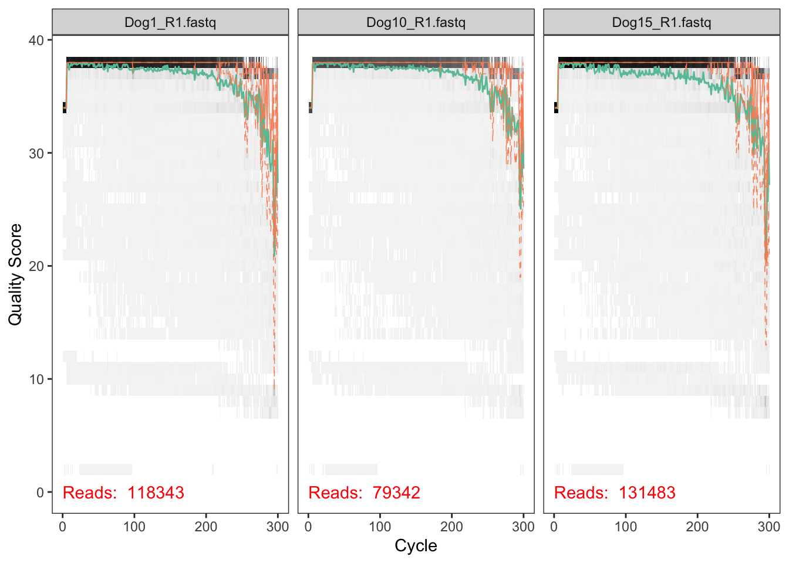
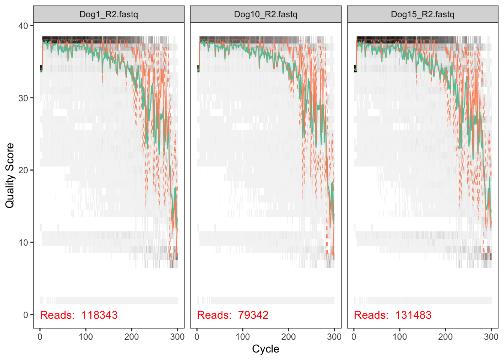

The material of taught in this module was developed by Benjamin Callahan.
Who : The course is aimed at Master, PhD students, and other researchers.
When : beginning of September 2019.
Requirements: Participants must have access to R or RStudio via their own computer or cluster. git status Contact : Please email allali.imane@gmail.com for more information.
You should have your access to R and RStudio via your own compute or cluster.
The dataset we will be working are the practice dataset from the H3ABioNet 16S rDNA diversity analysis SOP. The source data can be accessed here but for our purposes it is already on the cluster.
The table below contains the metadata associated with the dog stool samples. There are three dogs which are treated with increased percentage of a compound in their diet: 5 different treatments (0-4, representing an increased percentage of a compound in their diet).
| Sample | Dog | Treatment | Read Counts r1 | Read Counts r2 |
|---|---|---|---|---|
| Dog1 | B | 2 | 118343 | 118343 |
| Dog2 | G | 3 | 108679 | 108679 |
| Dog3 | K | 3 | 101482 | 101482 |
| Dog8 | B | 4 | 108731 | 108731 |
| Dog9 | G | 0 | 109500 | 109500 |
| Dog10 | K | 4 | 79342 | 79342 |
| Dog15 | B | 1 | 131483 | 131483 |
| Dog16 | G | 4 | 114424 | 114424 |
| Dog17 | K | 0 | 99610 | 99610 |
| Dog22 | B | 3 | 145029 | 145029 |
| Dog23 | G | 1 | 193158 | 193158 |
| Dog24 | K | 2 | 162487 | 162487 |
| Dog29 | B | 0 | 122776 | 122776 |
| Dog30 | G | 2 | 137315 | 137315 |
| Dog31 | K | 1 | 150613 | 150613 |
First, we load the dada2 package on your RStudio. if you do not already have it, see the dada2 installation instructions.
library(dada2); packageVersion("dada2")## [1] '1.13.1'Define the path variable so that it points to the extracted directory on your computer or cluster:
MY_HOME <- Sys.getenv("HOME")
data <- paste(MY_HOME, "/dada2_tutorial_dog/dog_samples", sep='') # change the path
list.files(data)## [1] "Dog1_R1.fastq" "Dog1_R2.fastq" "Dog10_R1.fastq" "Dog10_R2.fastq"
## [5] "Dog15_R1.fastq" "Dog15_R2.fastq" "Dog16_R1.fastq" "Dog16_R2.fastq"
## [9] "Dog17_R1.fastq" "Dog17_R2.fastq" "Dog2_R1.fastq" "Dog2_R2.fastq"
## [13] "Dog22_R1.fastq" "Dog22_R2.fastq" "Dog23_R1.fastq" "Dog23_R2.fastq"
## [17] "Dog24_R1.fastq" "Dog24_R2.fastq" "Dog29_R1.fastq" "Dog29_R2.fastq"
## [21] "Dog3_R1.fastq" "Dog3_R2.fastq" "Dog30_R1.fastq" "Dog30_R2.fastq"
## [25] "Dog31_R1.fastq" "Dog31_R2.fastq" "Dog8_R1.fastq" "Dog8_R2.fastq"
## [29] "Dog9_R1.fastq" "Dog9_R2.fastq" "filtered"#{r} #MY_HOME <- getwd() #data <- paste(MY_HOME, "/dog_samples", sep='') # change the path #list.files(data) # If the package successfully loaded and your listed files match those here, you are ready to go through the DADA2 pipeline. <br><br>
Now, we read in the names of the fastq files, and perform some string manipulation to get matched lists of the forward and reverse fastq files.
# Forward and reverse fastq filenames have format: SAMPLENAME_R1.fastq and SAMPLENAME_R2.fastq
fnFs <- sort(list.files(data, pattern="_R1.fastq", full.names = TRUE))
fnRs <- sort(list.files(data, pattern="_R2.fastq", full.names = TRUE))
# Extract sample names, assuming filenames have format: SAMPLENAME_XXX.fastq
sample.names <- sapply(strsplit(basename(fnFs), "_"), `[`, 1)
sample.names## [1] "Dog1" "Dog10" "Dog15" "Dog16" "Dog17" "Dog2" "Dog22" "Dog23"
## [9] "Dog24" "Dog29" "Dog3" "Dog30" "Dog31" "Dog8" "Dog9"We start by visualizing the quality profiles of the forward reads:
plotQualityProfile(fnFs[1:2]) <br><br>
We start by visualizing the quality profiles of the Reverse reads:
plotQualityProfile(fnRs[1:2])
We assign the filenames for the filtered fastq.gz files:
# Place filtered files in filtered/ subdirectory
filtFs <- file.path(data, "filtered", paste0(sample.names, "_F_filt.fastq.gz"))
filtRs <- file.path(data, "filtered", paste0(sample.names, "_R_filt.fastq.gz"))
names(filtFs) <- sample.names
names(filtRs) <- sample.namesout <- filterAndTrim(fnFs, filtFs, fnRs, filtRs, truncLen=c(240,160),
maxN=0, maxEE=c(2,2), truncQ=2, rm.phix=TRUE,
compress=TRUE, multithread=TRUE) # On Windows set multithread=FALSE
head(out)## reads.in reads.out
## Dog1_R1.fastq 118343 113501
## Dog10_R1.fastq 79342 76839
## Dog15_R1.fastq 131483 122917
## Dog16_R1.fastq 114424 109530
## Dog17_R1.fastq 99610 95439
## Dog2_R1.fastq 108679 104449